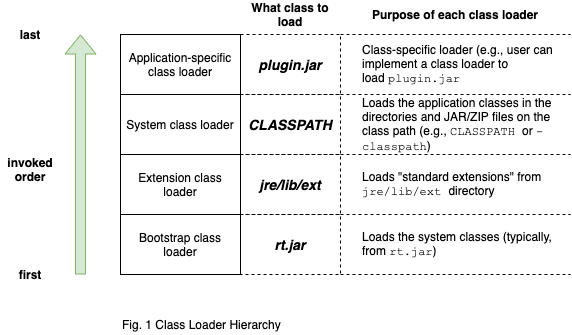

Understand Class Loader in Java 8
In this post, we study the basic mechanism of class loader in Java 8. Then, we use Presto as a real example to show how class loader works in Presto and why understanding class loader is important.
Class Loader Basics
Note
This section's content is adapted from Core Java 10th edition.
Any .java source code files will be compiled into byte code (i.e., virtual machine code), which are contained in .class files.
Those .class files are then consumed by the Java Virtual Machine (JVM). .class files are class files. Each class file contains the definition
and implementation code for one class or interface.
Class loader hierarchy is shown below:

Every Java program has at least three class loaders:
-
Bootstrap class loader loads the system classes (typically from the JAR file
rt.jar)- It is part of the JVM and implemented in C. Thus, there is no
ClassLoaderobject corresponding to the bootstrap class loader ( e.g.,String.class.getClassLoader()returnsnull)
- It is part of the JVM and implemented in C. Thus, there is no
-
Extension class loader loads "standard extensions" from the
jre/lib/extdirectory. We can drop JAR files into that directory, and the extension class loader will find the classes in them.
Note
If we drop a JAR file into the jre/lib/ext directory, we have to make sure that all classes in the JAR file will have
class dependencies that can be loaded by system or extension class loader. This is because if one of the JAR file classes need to load
a class that is not a system or extension class, extension class loader will not find it because extension class loader does not
use the class path.
-
System class loader loads the application classes. It locates classes in the directories and JAR/ZIP files on the class path set by
CLASSPATHenvironment variable or the-classpathcomand-line option. -
Application-specific class loader. Application classes can implement their own class loaders. For example, some programs have a plugin architecture in which certain parts of code are packaged as optional plugins. If the plugins are packaged as JAR files, we can load the plugin classes with an instance of
URLClassLoader
URL url = new URL("/path/to/plugin.jar");
URLClassLoader pluginLoader = new URLClassLoader(new URL[] { url });
Class<?> cl = pluginLoader.loadClass("mypackage.MyClass");